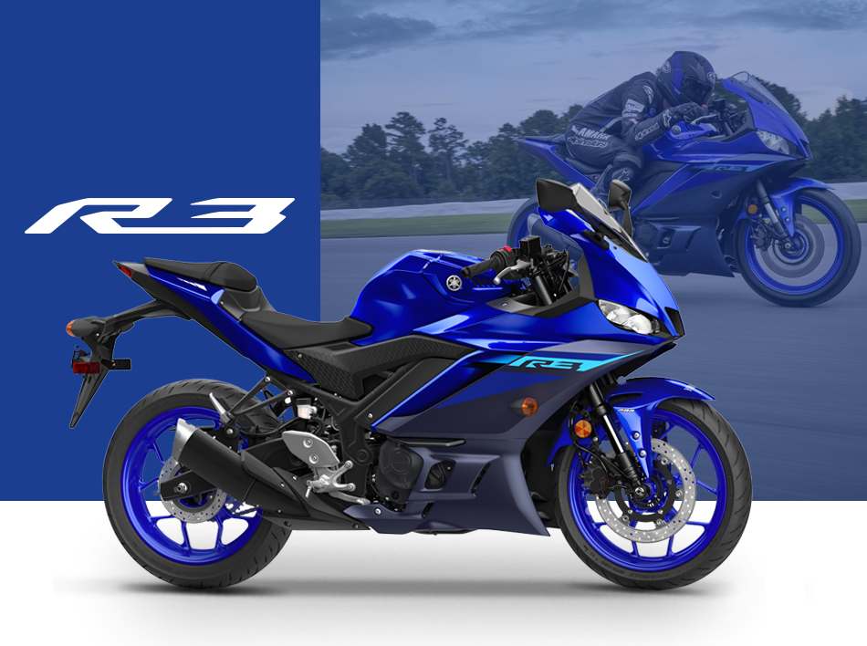

Modelos Destacados Yamaha

Yamaha MT-09
Motor CP3 de 890cc, diseño agresivo y manejo ágil. Una de las naked más populares del mundo.

Yamaha YZF-R1
Superdeportiva con ADN MotoGP. Motor de alto rendimiento y electrónica avanzada.

Yamaha XMAX 300
Scooter premium con excelente confort, eficiencia y capacidad urbana.